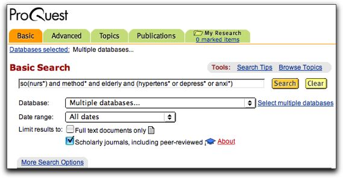

Learning Outcomes
After reading this tutorial, students will be able to construct search statements, using the Library's licensed database ProQuest, to retrieve articles that
- relate to a patient's problems.
- are research articles from a refereed or scholarly journal.
- are authored by a nurse.
Introduction
Finding original research articles related to your patient's problems can be a challenging requirement. Many students begin by looking for nursing research articles that will focus upon the medical diagnosis or the etiology written in their patient's chart by a doctor. Although the medical terminology or medical diagnosis in the chart should be checked as possible subjects in ProQuest, be aware that these types of articles are a smaller percentage of nursing research written.
This is not surprising. Medical research tends to be written by medical doctors and examines the nature of disease, etiology and pathology. Nursing research may also include such topics, but also represents the efforts of nurses to study problems arising within the wide realms of nursing interactions. This may be inside or outside clinical practice. However, some common disease states such as: diabetes, cancer and stroke etc will more easily be found in nursing research publications. A high percentage of articles are also psycho/social in nature. Both types of articles, medical and psycho/social, are valid sources of nursing research. By understanding the nature of original research and by equipping yourself with all aspects, potentials and considerations of your patient's history, you should be able locate research articles applicable to your case study.
One of the first difficulties you may encounter is how to identity a research article. All original research across any discipline attempts to use the principles of scientific method to investigate a problem. The steps of this process should be clearly identifiable if the article is to be accepted as research. If you would like to read an excellent, easily understandable explanation of the scientific method, the research process and a discussion of the characteristics of a research article you may refer to Notter's Essentials of Nursing Research, pages 28 -31. It is available in the LAC Library Reference Room under the Call Number RT 81.5.
An effective and simple way to become familiar with the appearance and elements of research articles is to examine a few issues of the journal Nursing Research, Call Number RT 1 N8. Nursing Research includes articles consistently containing the steps of scientific method. The steps are shown as headings in the article and are meant to organize the research process from start to finish. Some common headings are Background, Objective, Methods, Procedure, Statistics, Results, and Discussion.
As you browse the titles of the articles, you may be surprised to see that the research subjects are not about general patient health problems but rather very focused and highly specific. This is characteristic of original research. The topics are unique problems in which the investigator uses the research process to identify, refine and study to reach an evidence-supported outcome. In research articles, a literature survey discussing other studies might also be present. If a literature survey is included, be sure the article is also organized using the above the research headings or those that show a similar design.
Creating a Search Statement
We are now ready to being to construct a Search Statement for use in ProQuest. The search statement will be written to retrieve articles that
- relates to the patient's problems.
- are research articles from a refereed or scholarly journal.
- Are authored by a nurse.
Remember, our goal is to find research articles that you can relate to your patient's problems. Before we begin it is very important that you have collected in-depth information about your patient and have thought about it in terms of the nursing process. You will use this information very helpful in creating your own search statement.
The clinical vignettes below contain elements of the type of information you may see in your patient's chart and your own interactions with your patient. A search statement template that you may customize to according to your knowledge of your patient follows each vignette.
Clinical Vignettes
Example 1: Older Adult Inpatient
Donna Drake, 84 is anticoagulated with warfarin for chronic atrial fibrillation. She takes medication for hypertension and chronic obstructive pulmonary disease and was admitted for severe epistaxis. A nasal balloon catheter was inserted for hemostasis and her INR was found to be 5.4. She is uncomfortable, restless and tearful about "being old and sick." She lives in a senior apartment and continues to drive, although only short distances and in the daytime.
Let's translate this information into the search statement below to find possible research articles. You may pattern your own search statement upon the following snapshot of a ProQuest search for nursing research articles.
Snap Shot
Understanding the Search Statement
Within the search statement shown above, And is used as a connecting word to link keywords, concepts, and criteria that must appear in the article.
The truncation symbol * is a useful way to be sure that all possible endings of a keyword will be retrieved and added to your search results. It is used frequently in the search statements below to achieve maximum results.
The keyword method* is truncated to find articles containing methods or methodology. These terms are headings that appear with particular high frequency and consistency in research articles.
The prefix "so" stands for source or title. When you use this prefix ProQuest will look for publication titles containing that word. In this search statement, using the truncated nurs* tells Proquest to retrieve all journal titles containing some form of "nurse." Some examples of these publications are:
- Critical Care Nurse
- Pediatric Nursing
- Association of Operating Room Nurses
The parentheses contain some key words describing the patient, Donna Drake's condition. The keywords are separated by the word "Or" to retrieve articles that discuss any of the concepts: hypertension or depression or anxiety.
Think...
Although the term hypertension is present in the vignette, the term depression is not present. Look at the verbalizations of the patient and think about them in terms of a nursing diagnosis. Would her verbalizations support that she is depressed? The term anxious is not present either. But from the patient's verbalizations it too could apply and may be added within the parentheses using "or" along with any others pertinent keywords to the search statement. Case studies are meant to represent the complete or whole patient and think about all possibilities within this context..
Brainstorm
for keywords by browsing nursing reference books. The library reference room contains several nursing reference sources to assist you in compiling a list of key words to use in your search statement. You may want to start looking for factors that could relate to your patient in a reference source, such as the Handbook of Nursing Diagnosis, Call Number Ref RT 48.6. C385 2002 by Lynda Juall Carpenito.
Tips
Nursing Research, Call Number RT 1 N8, is not available through ProQuest. The Library maintains a print subscription of this important nursing research journal. To evaluate its contents, you may simply scan the titles of the research articles. The titles are located on the cover of each issue.
I need research articles written by a nurse.
To determine whether an article is written by a nurse, the easiest and most successful approach is to simply scroll down toward the end of the article while looking for the heading author affiliation. The post-nominal letters or initials behind the author's name indicate the educational degree. In the field of nursing there are several post-nominals that might be present. Here are a few examples:
- RN (Registered Nurse)
- MSN (Master's of Science in Nursing)
- CPN (Certified Nurse Practitioner)
- DNP (Doctor of Nursing Practice)
As an alternative strategy, an additional search field AA (author affiliation) can also be added to the search statement to narrow the results to articles authored by nurses. If you chose this method, be sure to include several post-nominal designations using Or inside parentheses.